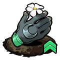
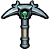
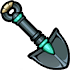
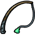

Gathering Tools
Gathering Tools are unlockable equipment used to collect various types of resources during runs. Initially, none of the tools are available—except for Hand Gathering, which is accessible from the start. The rest can be unlocked by performing the Night's Craftwork Incantation at Hecate’s Cauldron, which requires 1 Moly.
Tools List
| Image | Name | Description | Quote |
|---|---|---|---|
|  | Hand Gathering | Used to harvest Flora directly from the ground; no Gathering Tool required. | Those sufficiently experienced may draw greenery from the Earth much like water from a well. |
|  | Crescent Pick | Used to harvest Ore from rocks and terrain, which is mostly used for unlocking and upgrading Nocturnal Arms | Its engravings suggest the humility and restraint expected by its bearer. |
| Tablet of Peace | Used to gather Psyche from Shades, for increasing Arcana Cards use capacity. | Some Shades are incapable of deceit; fewer still are fit to join the cause. | |
|  | Silver Spade | Used to gather Seeds for planting at The Crossroads, which are mostly used for fueling Incantations | It is said to uncover only that which Gaia willingly bestows. |
|  | Rod of Fishing | Used to gather Fish from rivers and pools, which are purely for selling to the Broker | Poseidon himself anointed this device, and authorized its use. |
{kind=link}
{kind=link}
{kind=link}
{kind=link}
{kind=link}